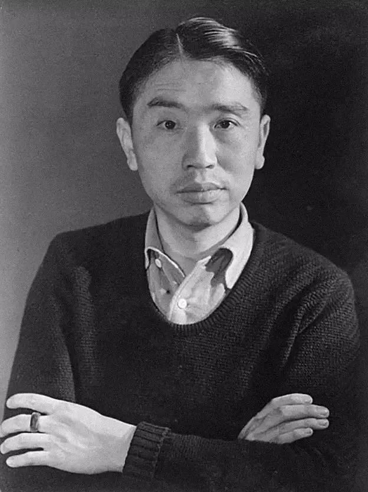

东方马蒂斯常玉
常玉(1901年10月14日-1966年8月12日)，原名常玉书，是中国近现代著名画家。被誉为"东方的马蒂斯"或"中国的莫迪里阿尼"。 常玉生于四川重庆(今重庆市)，早年留学日本，后旅法超过发展艺术生涯，并长期旅居于此，成为20世纪中国最负盛名的旅外艺术家的代表人物之一。
作品详情
《白鹤》是常玉的代表作之一，创作于1950年代。这幅作品展现了常玉对东方美学的独特理解和西方现代艺术技法的融合。画面以简洁的线条勾勒出白鹤的优雅姿态，色彩明快而富有表现力。常玉擅长用最简约的形式表达最丰富的内涵，这幅作品体现了他对生命与自然的思考，以及对传统中国绘画精神的现代诠释。
常玉的作品风格独特，融合了中国传统绘画的精神与西方现代艺术的表现手法，形成了独树一帜的艺术语言。他的作品色彩明快，构图简洁，线条流畅，充满诗意和哲理，被誉为20世纪中国最具国际影响力的艺术家之一。